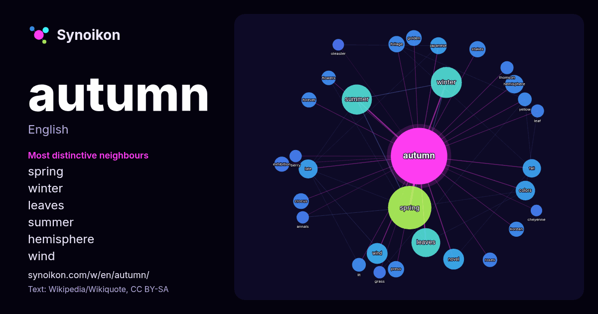

English · word of the day list
autumn
The words found around it in 1273 instances from Wikipedia, Wikiquote, Hacker News.

Most distinctive neighbours
- spring 62×
- winter 34×
- leaves 25×
- summer 21×
- hemisphere 18×
- wind 17×
- foliage 15×
- colors 14×
- crocus 14×
- stakes 13×
- novel 13×
- forever 12×
- fall 11×
- lit 10×
- golden 10×
- korean 9.9×
- exhibition 9.8×
- thomson 9.5×
- press 9.3×
- flowers 8.9×
× = how many times more often than in general Wikipedia text.
Most frequent neighbours
- spring 100
- winter 51
- summer 48
- leaves 44
- season 33
- american 32
- album 29
- born 28
- film 24
- novel 23
- song 23
- wind 23
- colors 20
- late 19
- fall 18
- hemisphere 18
- book 15
- japanese 15
- early 14
- foliage 14
In context
- Autumn, also known as fall in North American English, is one of the four temperate seasons on Earth. Outside the tropics, autumn marks the transition from Wikipedia snippets · Autumn
- "To Autumn" is a poem by English Romantic poet John Keats (31 October 1795 – 23 February 1821). The work was composed on 19 September 1819 and published Wikipedia snippets · To Autumn
- Autumn Leaves may refer to: Autumn leaf color, a phenomenon affecting deciduous plants by autumn Autumn Leaves (film), a 1956 film directed by Robert Wikipedia snippets · Autumn Leaves
- Autumn is one of the four temperate seasons. Autumn may also refer to: Autumn (1930 film) Wikipedia snippets · Autumn (disambiguation)
- Autumn Sonata (Swedish: Höstsonaten) is a 1978 psychological drama film written and directed by Ingmar Bergman, and starring Ingrid Bergman (in her final Wikipedia snippets · Autumn Sonata
- Autumn Reeser (born September 21, 1980) is an American actress. She is known for her roles as Taylor Townsend on the Fox series The O.C., Lizzie Grant Wikipedia snippets · Autumn Reeser
- Autumn Variations is the seventh studio album by English singer-songwriter Ed Sheeran. It was released on 29 September 2023 through his record label, Gingerbrea … Wikipedia snippets · Autumn Variations
- Autumn Story may refer to: An Autumn Story (novel), a 1947 novel by Tommaso Landolfi Autumn Story (Brambly Hedge), children's book 1980 An Autumn Story Wikipedia snippets · Autumn Story
More words
- art
- bell
- bread
- bridge
- cat
- city
- climate
- clock
- death
- desert
- dog
- family
- food
- forest
- garden
- god
- gold
- health
- heart
- history
- honey
- horse
- island
- language
- life
- map
- mirror
- money
- mother
- mountain
- nature
- power
- rain
- road
- salt
- science
- shadow
- silence
- song
- star
- storm
- summer
- tea
- time
- train
- truth
- water
- winter
- work
Precomputed on 2026-10-09 with default settings (±5 words, medium corpus). The interactive map can refresh it with live data.